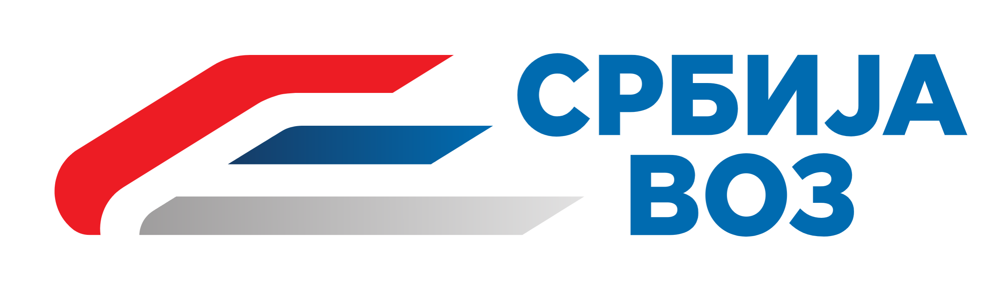

Pomoć sistema za upravljanjem železnice
Dobrodošli na pomoć sistema za upravljanjem železnice!
U nastavku možete videti sledeće stranice pomoći:
Korisnički profili
Prijava na sistem
Registracija novog profila
Opcije za kupce
Mreža linija
Red vožnje
Kupovina karata
Moja putovanja (istorija kupljenih karata)
Opcije za menadžere
Dodavanje vozova
Dodavanje redova vožnji
Uređivanje sedišta vozova
Izveštaji